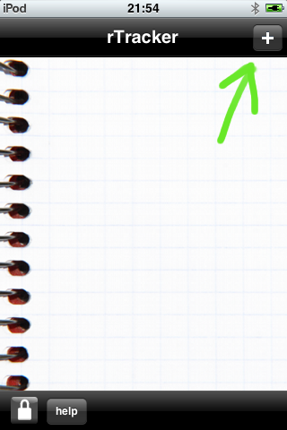
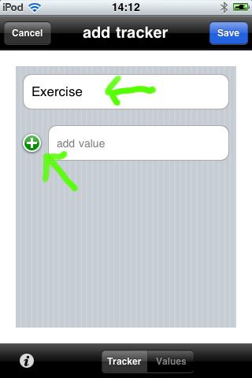
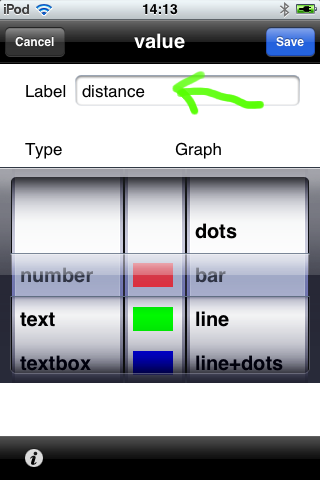
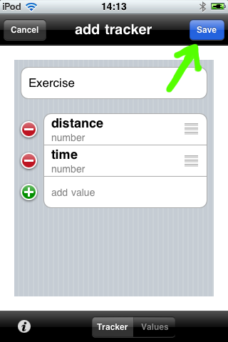

| Tap the '+' in the top right
corner of the front screen to add a new tracker |
 |
| Name your tracker Add some values |
 |
| Name each value Configure each value (What data types are available?) |
 |
| Save each page |
 |